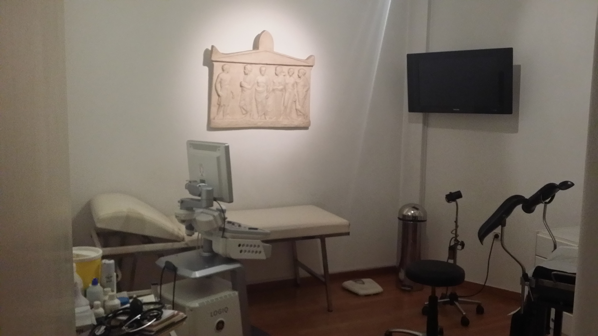

01
Τακτικός Γυναικολογικός Έλεγχος
Προληπτικός έλεγχος με τεστ Παπ, HPV test και υπερηχογράφημα για την έγκαιρη διάγνωση και την προστασία της υγείας σας.
Τεστ ΠαπHPV testΥπέρηχος
Ολοκληρωμένη γυναικολογική και μαιευτική φροντίδα σε κάθε φάση της ζωής — με διακριτικότητα, εμπιστοσύνη και σύγχρονο διαγνωστικό εξοπλισμό.

«Κάθε γυναίκα αξίζει φροντίδα που συνδυάζει επιστημονική ακρίβεια με ουσιαστική ανθρώπινη επαφή.»
Ο ιατρός Γεώργιος Τσιρακόπουλος είναι Επιμελητής Α' στο μαιευτήριο ΙΑΣΩ με πολυετή εμπειρία. Έχει διατελέσει επιμελητής στα μαιευτήρια ΜΗΤΕΡΑ, ΛΗΤΩ, και ως Επιμελητής Α' στο ΓΑΙΑ (Ιατρικό Κέντρο Αθηνών), καθώς και στην Α' Πανεπιστημιακή Κλινική του Νοσοκομείου "ΑΛΕΞΑΝΔΡΑ". Διαθέτει πλούσια εμπειρία στη Λαπαροσκοπική Χειρουργική, την Παθολογία Κυήσεως και τον Μαστό.
Στηρίζει με μεγάλη ευαισθησία τον φυσιολογικό τοκετό και τον μητρικό θηλασμό.
Ολοκληρωμένη φροντίδα σε κάθε φάση της γυναικείας υγείας. Επιλέξτε για περισσότερα.
Ένας σύγχρονος, άρτια εξοπλισμένος και φιλόξενος χώρος, σχεδιασμένος με γνώμονα την άνεση, την υγιεινή και την ασφάλειά σας.


Ο απαραίτητος γυναικολογικός και μαιευτικός έλεγχος σε έναν χώρο — με διακριτικότητα και ασφάλεια.
Προληπτικός κυτταρολογικός έλεγχος τραχήλου.
Μεγεθυντικός έλεγχος τραχήλου & κόλπου.
Υπερηχογράφημα έσω γεννητικών οργάνων.
Παρακολούθηση ανάπτυξης εμβρύου.
Κλινική εξέταση & υπερηχογράφημα μαστών.
Μοριακός έλεγχος για τον ιό HPV.
Ενδομήτρια αντισύλληψη με ασφάλεια.
Πλήρης γυναικολογική αξιολόγηση & ιστορικό.
Το ιατρείο λειτουργεί με ραντεβού. Η σημερινή ημέρα επισημαίνεται αυτόματα.
Συνολική βαθμολογία 5.0 / 5.0 από αξιολογήσεις ασθενών στο Google.
«Με παρακολούθησε σε όλη μου την εγκυμοσύνη με απίστευτη φροντίδα. Ένιωθα ασφάλεια σε κάθε ραντεβού.»
«Διακριτικότητα, υπομονή και αναλυτική ενημέρωση. Επιτέλους ένας γιατρός που σε ακούει πραγματικά.»
«Σύγχρονο ιατρείο, όλες οι εξετάσεις επί τόπου. Άριστη οργάνωση και πραγματικά ανθρώπινη αντιμετώπιση.»
«Τον εμπιστεύομαι για τον ετήσιο έλεγχό μου εδώ και χρόνια. Μεθοδικός, προσεκτικός και πάντα διαθέσιμος.»
Είμαστε εδώ για κάθε ερώτηση σχετικά με την υγεία σας. Επικοινωνήστε τηλεφωνικά ή επισκεφθείτε μας στο ιατρείο.